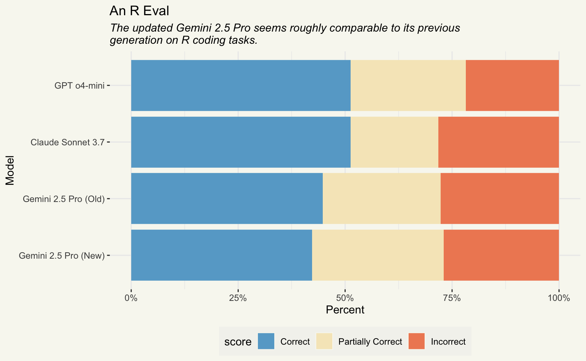

library(ellmer)
library(vitals)
library(tidyverse)
gemini_2_5_pro_new <- chat_google_gemini(
model = "gemini-2.5-pro-preview-03-25"
)
claude_sonnet_3_7 <- sonnet_3_7_thinking <- chat_anthropic(
model = "claude-3-7-sonnet-latest",
api_args = list(
thinking = list(type = "enabled", budget_tokens = 2000)
)
)
gpt_o4_mini <- chat_openai(model = "o4-mini-2025-04-16")The title line of Google’s release post on the newest Gemini 2.5 Pro release is “even better coding performance.” Reading this, I was curious whether we’d see a notable increase in performance compared to the last generation on R coding tasks; in an earlier post, I saw that the March release of Gemini 2.5 Pro was a contender with Claude 3.7 Sonnet on An R Eval, a dataset of challenging R coding problems.

In this post, I’ll be using the vitals package to compare the new Gemini 2.5 Pro release against its previous generation, as well as the leading “snappy” thinking models on this task from Anthropic and OpenAI: Claude 3.7 Sonnet (Thinking Enabled) and GPT o4-mini, respectively.
tl;dr
- The old and new Gemini 2.5 Pro releases seem roughly the same in their R coding capabilities.
- Claude Sonnet 3.7 with thinking enabled and GPT o4-mini are neck-and-neck as the leaders in this class of models.
Setting up the evaluation
Let’s start by defining our model connections using ellmer (notably, the dev version of the package):
You may have noticed that gemini_2_5_pro_new seemingly refers to a model from March "gemini-2.5-pro-preview-03-25". Google switched out the model underlying that string, meaning we can no longer access the old model, and code that used to refer to the old model will refer to the new one automatically. That was a choice. Thankfully, I ran this eval against the old Gemini 2.5 Pro version and saved the results a month ago, so I’ll do some trickery under-the-hood to include its results here.
Note that I needed to configure GOOGLE_API_KEY, ANTHROPIC_API_KEY, and OPENAI_API_KEY environment variables to connect to these services. The pricing for these models is roughly comparable:
# A tibble: 3 × 3
Name Input Output
<chr> <chr> <chr>
1 Gemini 2.5 Pro $1.25 $10.00
2 Claude 3.7 Sonnet $3.00 $15.00
3 GPT o4-mini $1.10 $4.40 A couple bits worth noting for interpreting this table:
- The new Gemini 2.5 Pro update has the same pricing as the old one.
- The per-token pricing for Gemini 2.5 Pro increases after the first 200,000 tokens in a request. We won’t come close to hitting that threshold in this eval, so the shown pricing is what applies here.
- Each of these are “reasoning” models, but may use varying numbers of tokens to come to an answer, so the actual cost breakdown for each of these may not reflect the ratios shown above.
We’ll be able to quantify the actual cost and number of tokens used using the new $get_cost() method from vitals; the package can total the cost for running a given eval for any model supported by ellmer.
A baseline task
As in my previous evaluations, I’ll use the are dataset from vitals and set up a task that will evaluate each model:
are_task <- Task$new(
dataset = are,
solver = generate(),
scorer = model_graded_qa(
scorer_chat = claude_sonnet_3_7,
partial_credit = TRUE
),
epochs = 3,
name = "An R Eval"
)
are_taskAn evaluation task An-R-Eval.
Note
See my previous post on Gemini 2.5 Pro for a more thorough description of this evaluation.
Let’s start by evaluating the new Gemini 2.5 Pro model.
are_gemini_2_5_pro_new <- are_task$clone()
are_gemini_2_5_pro_new$eval(solver_chat = gemini_2_5_pro_new)The new $get_cost() method from vitals gives a go at tallying up the cost of the eval for the solver and the scorer. I’ve uncovered a couple bugs in writing this blog post, but I’ll show the results here anyway:
are_gemini_2_5_pro_new$get_cost() provider model input output price
1 Google/Gemini gemini-2.5-pro 34038 98863 $0.00
2 Anthropic claude-3-7-sonnet NA NA $1.35Needless to say, the Gemini tokens were not free. :) Since the cost information for that model isn’t available from ellmer, that price should read NA rather than 0, but based on the I/O, that’s 5 cents for input tokens and a dollar for output tokens.
Interestingly, the knowledge cutoff for this model is January 2025. This eval was open sourced shortly after then; I wonder if we’ll start to see big jumps in performance once the knowledge cutoffs for newly released models include the time when this eval was publicly available on GitHub.
Next, we’ll evaluate Claude 3.7 Sonnet with thinking enabled:
are_claude_3_7 <- are_task$clone()
are_claude_3_7$eval(solver_chat = claude_sonnet_3_7)are_claude_3_7$get_cost() provider model input output price
1 Anthropic claude-3-7-sonnet 126611 141150 $2.50Note, here, that both the solver and the scorer used Claude 3.7 Sonnet here. By default, the method doesn’t differentiate between solver and scorer tokens; I wonder whether it should.
Finally, let’s evaluate GPT o4-mini:
are_gpt_o4_mini <- are_task$clone()
are_gpt_o4_mini$eval(solver_chat = gpt_o4_mini)are_gpt_o4_mini$get_cost() provider model input output price
1 OpenAI o4-mini-2025-04-16 29601 135219 $0.00
2 Anthropic claude-3-7-sonnet NA NA $1.12In this case, o4-mini’s costs were something like 3 cents for input and 60 cents for output.
Under the hood, I’ve imported the old Gemini 2.5 Pro results and situated them in an updated task object as gemini_2_5_pro_old. It’s shown first in the interactive viewer as gemini-2.5-pro-exp-03-25:
Analysis
Let’s combine the results of all evaluations to compare the models:
are_eval <-
vitals_bind(
`Gemini 2.5 Pro (New)` = are_gemini_2_5_pro_new,
`Gemini 2.5 Pro (Old)` = are_gemini_2_5_pro_old,
`Claude Sonnet 3.7` = are_claude_3_7,
`GPT o4-mini` = are_gpt_o4_mini
) %>%
rename(model = task) %>%
mutate(
model = factor(model, levels = c(
"Gemini 2.5 Pro (New)",
"Gemini 2.5 Pro (Old)",
"Claude Sonnet 3.7",
"GPT o4-mini"
))
)
are_eval# A tibble: 310 × 5
model id epoch score metadata
<fct> <chr> <int> <ord> <list>
1 Gemini 2.5 Pro (New) after-stat-bar-heights 1 I <tibble>
2 Gemini 2.5 Pro (New) after-stat-bar-heights 2 C <tibble>
3 Gemini 2.5 Pro (New) after-stat-bar-heights 3 I <tibble>
4 Gemini 2.5 Pro (New) conditional-grouped-summ… 1 P <tibble>
5 Gemini 2.5 Pro (New) conditional-grouped-summ… 2 P <tibble>
6 Gemini 2.5 Pro (New) conditional-grouped-summ… 3 I <tibble>
7 Gemini 2.5 Pro (New) correlated-delays-reason… 1 C <tibble>
8 Gemini 2.5 Pro (New) correlated-delays-reason… 2 P <tibble>
9 Gemini 2.5 Pro (New) correlated-delays-reason… 3 C <tibble>
10 Gemini 2.5 Pro (New) curl-http-get 1 C <tibble>
# ℹ 300 more rowsLet’s visualize the results with a bar chart:
are_eval %>%
mutate(
score = fct_recode(
score,
"Correct" = "C", "Partially Correct" = "P", "Incorrect" = "I"
),
) %>%
ggplot(aes(y = model, fill = score)) +
geom_bar(position = "fill") +
scale_fill_manual(
breaks = rev,
values = c("Correct" = "#67a9cf",
"Partially Correct" = "#f6e8c3",
"Incorrect" = "#ef8a62")
) +
scale_x_continuous(labels = scales::percent) +
labs(
x = "Percent", y = "Model",
title = "An R Eval",
subtitle = "The updated Gemini 2.5 Pro seems roughly comparable to its previous\ngeneration on R coding tasks."
) +
theme(
plot.subtitle = element_text(face = "italic"),
legend.position = "bottom"
)
To determine if the differences we’re seeing are statistically significant, we’ll use a cumulative link mixed model:
summary(are_mod)Cumulative Link Mixed Model fitted with the Laplace approximation
formula: score ~ model + (1 | id)
data: are_eval
link threshold nobs logLik AIC niter max.grad cond.H
logit flexible 310 -239.32 490.63 228(1343) 9.83e-06 3.8e+01
Random effects:
Groups Name Variance Std.Dev.
id (Intercept) 8.096 2.845
Number of groups: id 26
Coefficients:
Estimate Std. Error z value Pr(>|z|)
modelGemini 2.5 Pro (Old) -0.08905 0.37518 -0.237 0.812
modelClaude Sonnet 3.7 0.35848 0.37519 0.955 0.339
modelGPT o4-mini 0.59695 0.38113 1.566 0.117
Threshold coefficients:
Estimate Std. Error z value
I|P -1.7738 0.6526 -2.718
P|C 0.4034 0.6428 0.627For the purposes of this post, we’ll just take a look at the Coefficients table. The reference model here is the new Gemini 2.5 Pro. Negative coefficient estimates for a given model indicate that model is less likely to receive higher ratings than the new Gemini 2.5 Pro. Looking at the coefficients:
- The old Gemini 2.5 Pro is roughly the same in its R coding capabilities as the new one.
- While neither of the differences from the new Gemini 2.5 Pro are statistically significant, Claude Sonnet 3.7 and GPT o4-mini are neck-and-neck with each other as the SotA on this eval.
In short, from my perspective, there’s not much to see here with this new Gemini release.
Thank you to Max Kuhn for advising on the model-based analysis here.